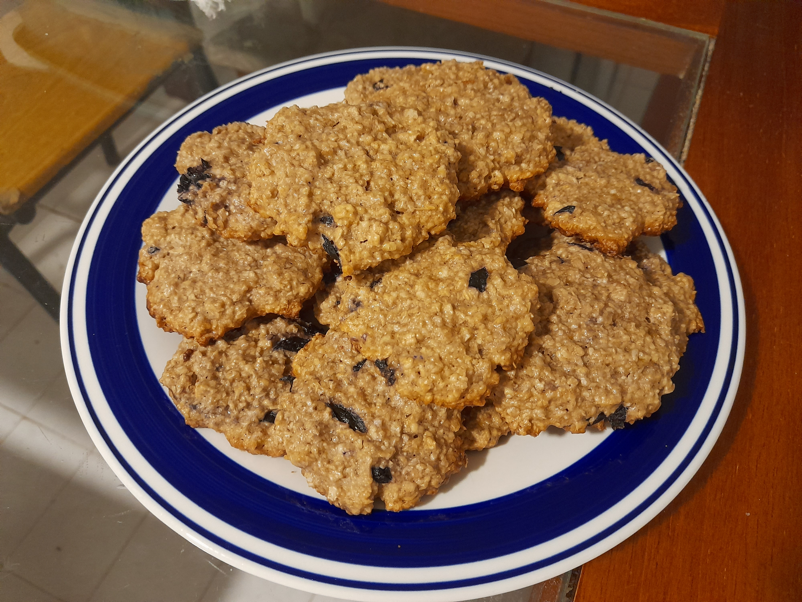

Home
Oatmeal Cookies

Description
Healthy cookies with crunchy texture on the outside but soft on the inside.
Ingredients
- Oatmeal 230gr
- Flour 100gr
- Mascabo sugar 100gr
- Sunflower oil 100ml
- Eggs 2
- Vanilla essence 1tsp
Steps
- Mix the flour with oatmeal and mascabo sugar.
- Add the eggs and the oil, mix again.
- Let the mix hydrate for about 20 min.
- Make balls and press them on a baking tray.
- Bake at 180°C for 15 min.